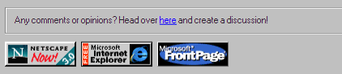
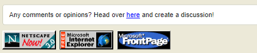

Added GitHub Discussions And A Favicon!
Good news!
I have added GitHub Discussions to the
GitHub repository of the website, and I have also
added a favicon (that cool little computer icon in the tab)!
The GitHub Discussions tab of my website will
allow people to provide comments and opinions on my posts, or the website in general. Now you may be asking,
"Can't you just add a comments section?" and the answer is: no.
GitHub Pages is static, meaning that adding a comments section would be insecure, and prone to spam.


About that favicon, here it is.

Isn't it beautiful? I think it looks pretty good.